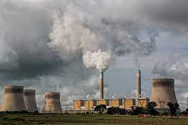

my favourite place
Jammu and Kashmir
Its my one of the favourite place becase
It have two capitals- The summer and the Winter.It is a very cold place. People wear woolen clothes in summer too. I have heard that here is a garden of fruits which is very famous for their fruits.
my favourite movie

I like the movie Lion King.
I liked the movie THE LION KING very much when I was small and played the movie in my mother's phone. The Hero of the movie is SIMBA. Simba was the intelligent and playful cub of lion. The villan in the movie was SCAR. Simba had three more friends apart from BUCKSHOT- MOTU, PATLU AND one more.
news about environment
-
Ease Into Climate Change Instruction Through Ocean Acidification
Although climate change garners the bulk of headlines, ocean acidification is an equally important issue that also results from our increasing consumption of fossil fuels. As atmospheric CO2 dissolves into the ocean, the ocean's pH decreases, making it increasingly difficult for organisms that build calcium carbonate skeletons to grow and thrive. Given that these marine calcifiers – such as corals, snails, shellfish, crustaceans, and plankton – often form the base of oceanic food webs and are habitat and food resources for larger oceanic plants and animals (including humans), ocean acidification poses a serious threat. In this article, we present a series of investigations that provide evidence that increases in anthropogenic sources of CO2 contribute to the acidification of the ocean, and that an increasingly acidic ocean can negatively impact marine calcifiers.
-
Environmental Pollution
Environmental pollution is not a new phenomenon, yet it remains the world’s greatest problem facing humanity, and the leading environmental causes of morbidity and mortality. Man’s activities through urbanization, industrialization, mining, and exploration are at the forefront of global environmental pollution. Both developed and developing nations share this burden together, though awareness and stricter laws in developed countries have contributed to a larger extent in protecting their environment. Despite the global attention towards pollution, the impact is still being felt due to its severe long-term consequences. This chapter examines the types of pollution—air, water, and soil; the causes and effects of pollution; and proffers solutions in combating pollution for sustainable environment and health.